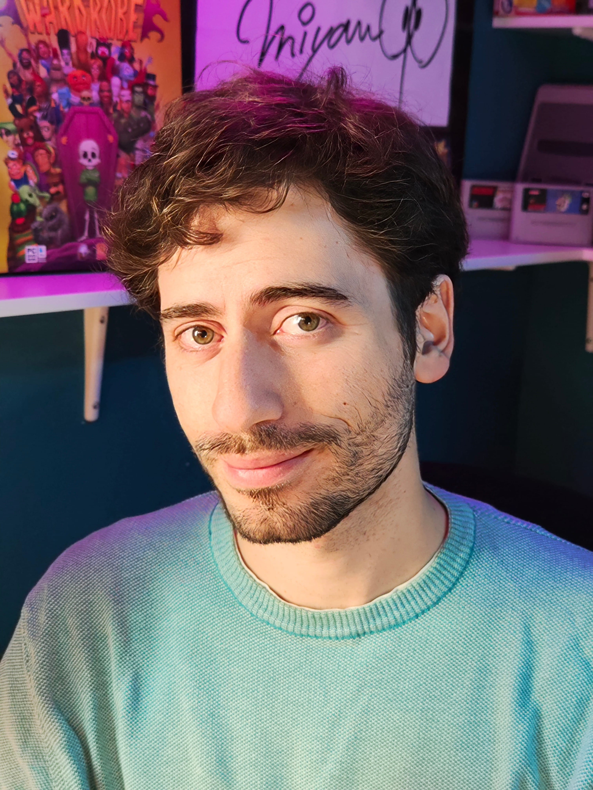

Federico Maggiore
Attore · Doppiatore · Speaker pubblicitario
Dai voce alle tue storie.
Il nuovo sito è in arrivo. Nel frattempo puoi ascoltare le mie ultime demo.

Federico Maggiore
Attore · Doppiatore · Speaker pubblicitario
Il nuovo sito è in arrivo. Nel frattempo puoi ascoltare le mie ultime demo.